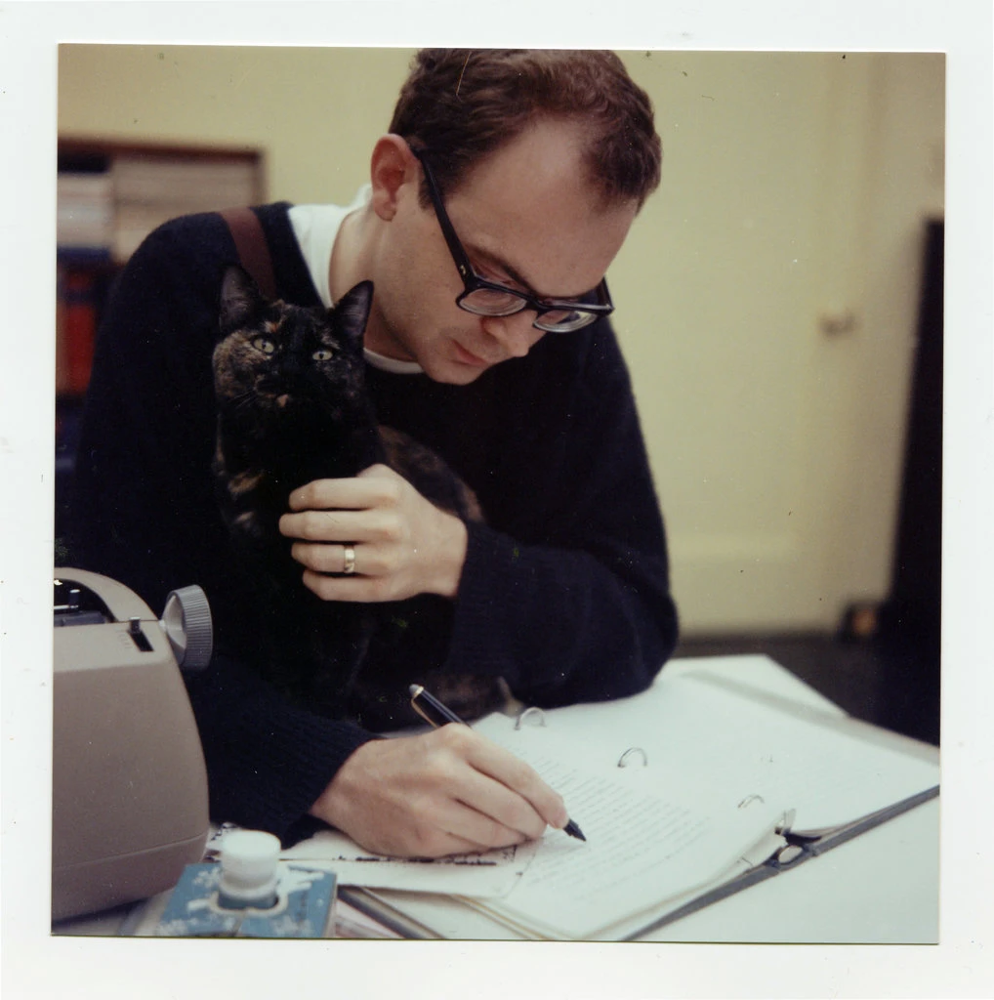

Donald Knuth in 1963. Source: New York Times.
I want to describe a curious method for getting work done which essentially involves doing as few similar or related tasks as possible, for as long as is reasonable. Such a method clearly runs contrary to other popular systems for getting work done (like the Pomodoro Technique, which involves arbitrarily breaking tasks down into small chunks of twenty minutes or so), but I have come to realise that these more protean systems of subdivision might not be so suited to some. For these kinds of people, task-switching is like reversing a speeding locomotive. This is the scenario: you begin your period of work, eager to make progress, and get started on your first task. Things are a little slow at first, but you soon find your rhythm, and your momentum continues to build until you find yourself well established in the task at hand.
But now you are suddenly asked (or you decide, perhaps out of a sense of duty) to switch over to a different job—one which could not be more different from the one you are working on at the moment. No, this task is daunting and unfamiliar, and you feel the consequent anxiety rising within you. That sense of familiarity established while working has been shattered, and you must now begin the cycle anew.
This is a situation I am keen to avoid, and to do so I put forward my spin on the concept of ‘batch mode’. The idea is not new: writing on quitting email in 1990 (a very early adopter), computer scientist Donald Knuth explained that
email is a wonderful thing for people whose role in life is to be on top of things. But not for me: my role is to be on the bottom of things. What I do takes long hours of studying and interruptable concentration.
I have come to realise that this “[getting on] the bottom of things” has the potential to be a powerful idea which can ensure stability throughout the working day.
Such a system is applied by default to any course of work which involves the repetition of only one or two tasks. Conversely, there are cases in which the method would simply not be tenable: a train driver can’t queue up all of their breaking and accelerating motions prior to the trip! But ‘batch mode’ remains a real possibility for any who find themselves with a number of tasks—large, small, or otherwise varied - to do throughout the day. I'm going to use the illustrator as a case study to discuss the concept, but it could equally apply to myriad other occupations. Independent comic artists face what is quite the uphill battle when going about their work: they are the writer, the layout artist, the inker, and text-writer, and the renderer, and all of these tasks have to be directed toward dozens of pages! One way to break down this daunting workload is to go page-by-page, pencilling, inking, and colouring the first page in its entirety before moving on to the second. But alternatively, one could shift into batch mode, planning out a whole stack of twenty pages in one sitting, inking them in another, and colouring the entirety in a final push.
This style of work will not suit everyone: but consider the difference between the number of task switches performed for each method. Let’s say that you have a chapter to prepare which consists of twenty pages, and three sub-tasks to perform (that is, pencilling, inking, and colouring: three quite different tasks) for each. Our batch method only has two ‘turn-arounds’, with large periods of similar work in-between, whereas we would end up with 2 × 20 = 40 changes in task, were we to do each page in isolation! If you are the kind of person who finds it easier restrict your focus, ‘batch mode’ might just be the thing for you.